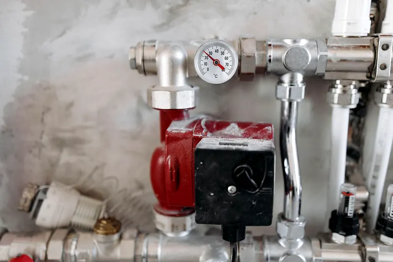
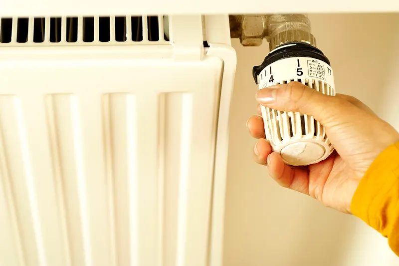

Why your boiler keeps losing pressure
Topping it up every week isn't a quirk of your boiler — it's a leak, a vessel or a valve. One of the three is an easy fix.
Read itManchester water isn't the hardest in England, but a scaled heat exchanger will still cost you hot water and gas — and it happens quietly.
A combi boiler heats your hot water on demand, on the way to the tap, through a plate heat exchanger — a stack of thin metal plates with mains water on one side and hot heating water on the other. It works because those channels are narrow. Which is exactly why limescale ruins it.
Radiators being fine while hot water is poor is the useful clue: it points at the plate exchanger or the diverter valve rather than the boiler as a whole.
A heat exchanger out of a Manchester house. That white crust is what your hot water has been trying to get through.
Scale forms out of hard water when it's heated — and the hotter the surface, the faster it forms. In a combi, the hottest surface the mains water ever touches is the plate exchanger, so that's where it lands first. The heating side of the system doesn't scale in the same way, because it's the same water going round and round: once the dissolved minerals have dropped out, that's that. It's the constant stream of fresh mains water through the hot water side that keeps feeding it.
Turning the domestic hot water temperature down a few degrees genuinely slows it. Most combis are set far hotter than anyone actually showers at.
When you open a hot tap, a valve inside the boiler diverts the heat away from the radiators and into the hot water exchanger. When it sticks half way, you get the same lukewarm shower — and often radiators that get slightly warm when you're only running a tap. It's a different part and a different job, which is why it's worth diagnosing rather than assuming.
Worth saying: if the boiler is fifteen years old and the exchanger has gone, we'll be straight with you about whether a new boiler makes more sense than the repair. Sometimes the repair is obviously right. Sometimes it's propping up something with two winters left in it.

Topping it up every week isn't a quirk of your boiler — it's a leak, a vessel or a valve. One of the three is an easy fix.
Read it
Which half of the radiator is cold tells you whether you need a 30-second job with a bleed key or a proper flush.
Read itWho is allowed to connect it, why the stability chain matters, and the tightness test that nobody watches being done.
Read itStraight through to Mohammad Ejaz. No call centre, no hold music.